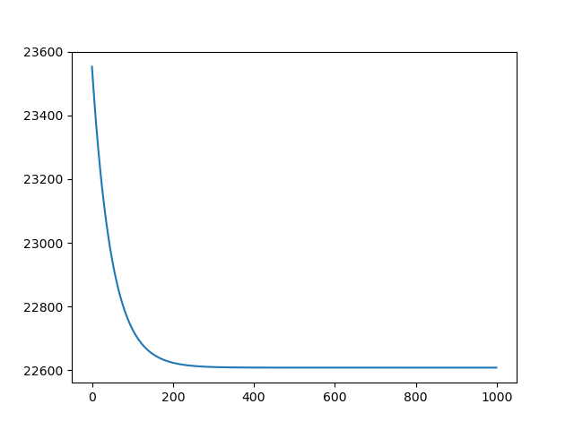

本期内容
- 一致性优化
- 一致性ADMM与分布式梯度下降的区别
- Ray Actor
- 代码演示
一致性优化
一致性优化将分布式问题转化为带约束的ADMM形式。假设数据按行切分到N个节点，每个节点有局部目标函数 \( f_i(\theta) \)，所有节点需使用同一个参数 \(\theta\)。
引入局部参数 \(\theta_i\) 和全局共识变量 \(z\)，构造约束优化问题：
\[ \begin{aligned} \min_{\theta_1,\ldots,\theta_N, z} &\sum_{i=1}^N f_i(\theta_i) \\ \text{s.t.} &\quad \theta_i - z = 0, \quad i=1,\ldots,N. \end{aligned} \]代入ADMM标准形式，得到一致性ADMM的缩放形式迭代公式：
\[ \begin{aligned} \theta_i^{k+1} &= \arg\min_{\theta_i} \left\{ f_i(\theta_i) + \frac{\rho}{2} \|\theta_i - z^k + u_i^k\|_2^2 \right\}, \quad i=1,\ldots,N, \\[4pt] z^{k+1} &= \frac{1}{N} \sum_{i=1}^N \left( \theta_i^{k+1} + u_i^k \right), \\[4pt] u_i^{k+1} &= u_i^k + \theta_i^{k+1} - z^{k+1}, \quad i=1,\ldots,N. \end{aligned} \]其中第一步和第三步对不同节点完全独立，可并行计算。局部子问题等价于对每个 \(f_i\) 计算近端算子。
可进一步化简。由于 \(\bar{u}^{k+1}=0\)，有 \(z^{k+2} = \bar{\theta}^{k+2}\)，迭代公式可简化为：
\[ \begin{aligned} \theta_i^{k+1} &= \arg\min_{\theta_i} \left\{ f_i(\theta_i) + \frac{\rho}{2} \|\theta_i - \bar{\theta}^k + u_i^k\|_2^2 \right\}, \\[4pt] u_i^{k+1} &= u_i^k + \theta_i^{k+1} - \bar{\theta}^{k+1}. \end{aligned} \]以分布式Logistic回归为例，局部子问题为在原目标函数上加一个L2惩罚项，使其不偏离全局共识。
收敛判断条件：
- 原始残差：\( r_i^k = \theta_i^k - z^k \)，全局原始残差为 \(\|r^k\|_2^2 = \sum_{i=1}^N \|\theta_i^k - z^k\|_2^2\)
- 对偶残差：\(\|s^k\|_2^2 = \rho^2 N \|z^k - z^{k-1}\|_2^2\)
通信模式：每轮广播全局参数 \(z^k\)（或 \(\bar{x}^k\)），收集各节点 \(x_i^{k+1}\) 计算 \(\bar{x}^{k+1}\)。
一致性ADMM与分布式梯度下降的区别
| 维度 | 分布式梯度下降（Ray Task） | 一致性ADMM（Ray Actor） |
|---|---|---|
| 每轮计算 | 计算局部梯度 | 解局部优化子问题 |
| 中心节点 | 聚合梯度并更新参数 | 对局部参数求平均 |
| 通信内容 | 梯度（向量） | 参数与对偶变量（向量） |
| 本地计算量 | 轻（一次梯度计算） | 重（解一个优化子问题） |
| 迭代轮数 | 多（梯度下降收敛慢） | 少（ADMM收敛更快） |
| 状态维护 | 无状态，算完即销毁 | 有状态，需长期保存局部变量 |
核心权衡：ADMM用更多的本地计算换取更少的通信轮数。
Ray Actor
Ray Task缺陷
一致性ADMM中，每个工作节点需长期保存：
- 本地数据块 \(D_i\)
- 局部变量 \(x_i\)
- 对偶变量 \(u_i\)
- 可复用的矩阵分解或缓存结果
如果用Ray Task，头部节点每轮需将所有状态（\(z\), \(u_i\), 甚至数据 \(D_i\)）传给Task，再回收结果，存在三个问题：
- 状态由头部节点维护，管理成本高
- 通信开销大，尤其当数据块或缓存对象很大时
- 代码表达不自然，数学上属于局部问题的变量却集中在头部节点
Ray Actor优势
Ray Actor是带状态的远程对象，适合多轮迭代、需要保存状态的场景：
|
|
优势总结：
- 本地存储数据：初始化时接收并保存本地数据，无需每轮重复传输
- 本地维护状态：\(x_i\) 和 \(u_i\) 存储在Actor内部，头部节点只需管理全局变量 \(z\)
- 通信量小：每轮只广播 \(z\) 并收集少量信息（如 \(\theta_i\)），大幅降低通信开销
- 代码自然：数学结构与代码结构一一对应，易于理解和维护
| 场景 | 更适合的工具 |
|---|---|
| 一次性、相互独立的计算 | Ray Task |
| 多轮迭代、需要保存状态 | Ray Actor |
| Bootstrap、交叉验证、蒙特卡洛 | Ray Task |
| 一致性ADMM、参数服务器、模拟环境 | Ray Actor |
代码演示
这一部分展示用Ray.Actor实现线性回归。
Step1:准备工作
|
|
Step2:创建Ray Actor
|
|
Step3:数据准备
|
|
Step4:训练模型
|
|
最终损失曲线如下:
